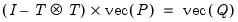
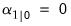
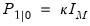
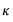
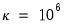
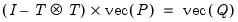
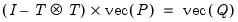

Technical Discussion Initial Conditions Initial Conditions If there are no @MPRIOR or @VPRIOR statements in the specification, EViews will either: (1) solve for the initial state mean and variance, or (2) initialize the states and variances using diffuse priors. Solving for the initial conditions is only possible if the state transition matrices , and variance matrices and are non time-varying and satisfy certain stability conditions (see Harvey, 1989, p. 121). If possible, EViews will solve for the conditions using the familiar relationship: . If this is not possible, the states will be treated as diffuse unless otherwise specified. When using diffuse priors, EViews follows the method adopted by Koopman, Shephard and Doornik (1999) in setting , and , where the  is an arbitrarily chosen large number. EViews uses the authors’ recommendation that one first set  and then adjust it for scale by multiplying by the largest diagonal element of the residual covariances.


 , and variance matrices
, and variance matrices  and
and  are non time-varying and satisfy certain stability conditions (see Harvey, 1989, p. 121). If possible, EViews will solve for the conditions
are non time-varying and satisfy certain stability conditions (see Harvey, 1989, p. 121). If possible, EViews will solve for the conditions  using the familiar relationship: . If this is not possible, the states will be treated as diffuse unless otherwise specified.
using the familiar relationship: . If this is not possible, the states will be treated as diffuse unless otherwise specified.